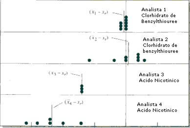

Análisis de alimentos y forrajes
PROTOCOLO DE LABORATORIOS
PASCAL LETERME, I.A., Ph D /PROFESOR ASOCIADO
FERNANDO ESTRADA, I.A. Esp / ANALISTA
ANÁLISIS DE ALIMENTOS Y FORRAJES
INTRODUCCIÓN
Algunos de los métodos utilizados para analizar alimentos destinados a la nutrición animal son técnicas basadas en un sistema desarrollado por dos investigadores alemanes, Henneberg y Stohmann, del centro de investigación de Weende. El llamado “Esquema de Weende” implica la estimación de los principales componentes de un alimento, utilizando métodos que permiten una medida razonable, rápida y aceptable de diferentes fracciones sin la necesidad de disponer de equipos sofisticados y costosos o de numerosos reactivos.
Hoy en día se utiliza básicamente el mismo esquema para caracterizar las materias primas utilizadas en nutrición animal. La Tabla 1 detalla las diferentes fracciones analizadas. Sin embargo, esta caracterización tiene sus límites, especialmente en materia de nutrición de monogástricos pues, los datos obtenidos no permiten formular una dieta balanceada que cubre los requerimientos de los animales. En particular, se desconoce el perfil en aminoácidos de las proteínas brutas, los elementos que componen las cenizas, el perfil en ácidos grasos del extracto etéreo, el contenido real en fibras solubles e insolubles y los carbohidratos, especialmente el almidón y los azúcares que constituyen el extracto libre de nitrógeno.
| Denominación | Otra denominación | Componentes |
|---|---|---|
| Proteína bruta | Proteína cruda | (Contenido en N) x 6.25 |
| Cenizas totales | Elementos minerales | |
| Grasa bruta | Extracto etéreo | Fracción soluble en etéreo (sobre todo lípidos) |
| Fibra bruta | Fibra de Weende | Fracción indefinida e insoluble de fibras |
| Extracto libre de N | Carbohidratos | 100 – (% de los otros componentes) |
Sin embargo, la determinación completa de los alimentos requiere de equipos sofisticados y costosos, como un cromatógrafo para analizar los aminoácidos, cromatografía (GC, HPLC y TLC), espectrofotometría de masas, por ejemplo, que no se encuentran en todos los laboratorios de nutrición animal.
GENERALIDADES DE LOS MÉTODOS ANALÍTICOS
1. MÉTODOS ANALÍTICOS
La decisión de utilizar un método para analizar un alimento depende sobre todo de la precisión requerida. Lamentablemente, una alta precisión requiere casi siempre de una gran inversión en tiempo y medios. El método elegido representa generalmente un compromiso entre precisión y economía.
Un segundo criterio de tipo económico es el número de muestras a analizar. Si este número es alto, se puede dedicar mucho tiempo a operaciones preliminares de preparación y arreglo. Si se trata de una o un número limitado de muestras, más vale utilizar un método muy sencillo. Para ayudar en la decisión del método a utilizar, se puede tomar en cuenta los criterios siguientes:
• Precisión o repetibilidad: medida de la capacidad de reproducir un resultado entre determinaciones realizadas por la misma persona o un mismo laboratorio en condiciones idénticas de método y equipos.
• Reproductibilidad: similar en principio a la precisión pero basado en la capacidad de reproducir el resultado por diferentes personas y/o laboratorios utilizando el mismo protocolo.
• Exactitud: capacidad de medir lo que se espera medir. Ejemplo: el contenido en proteínas en lugar de los componentes nitrogenados o la grasa en lugar del extracto etéreo.
• Sencillez de la operación: especialmente si se realiza con personas no capacitadas.
• Economía: expresada en término de costo de reactivos, equipos, tiempo y mano de obra.
• Rapidez: tiempo requerido para realizar un análisis. Es especialmente importante si se necesita un resultado para aceptar o no un lote de materia prima o para formular una dieta.
• Sensibilidad: capacidad del método a detectar y cuantificar un componente presente en concentraciones muy bajas. Ejemplo: toxinas u oligo-elementos.
• Especificidad: capacidad a detectar y cuantificar componentes en presencia de componentes similares.
• Seguridad: muchos reactivos son peligrosos para la salud, corrosivos y/o inflamables. Se debe dar prioridad a los métodos que utilizan un mínimo de reactivos peligrosos.
• Métodos aprobados: diferentes institutos nacionales o internacionales dan su aprobación después de que el método fue estudiado por laboratorios independientes que consideran que su sensibilidad, especificidad, reproductibilidad y repetibilidad son aceptables. El más conocido en materia de análisis de alimentos es el AOAC (Asociación of Official Analytical Chemists).
2. ERRORES EN LOS ANÁLISIS QUÍMICOS
Es imposible realizar un análisis químico que sea totalmente exento de errores o incertidumbres. Todo lo que se puede esperar es de minimizar estos errores y estimar el valor de manera aceptable.
Cada determinación es afectada por una serie de incertidumbres que se combinan para dar valores diferentes (ver Figura 1). Nunca se puede eliminar totalmente las incertidumbres, de tal manera que el valor real siempre será desconocido. Sin embargo, se puede calcular los parámetros estadísticos que permiten conocer los límites entre los cuales el valor real se encuentra con una gran probabilidad. No es nada fácil estimar la confiabilidad de datos experimentales. Sin embargo, es importante conocer los límites de precisión de un análisis en un laboratorio porque los datos de calidad desconocida no tienen valor.
No existe un método sencillo para determinar la confiabilidad de un análisis. Se puede hacer pruebas para detectar errores y se deben graduar los equipos y analizar muestras de referencia de composición conocida. Sin embargo, el experimentador deberá emitir su propio juicio sobre la calidad de los análisis de su laboratorio.
La precisión de una medida se determina por comparación entre los resultados de análisis repetidos. Lamentablemente, no es tan fácil obtener una estimación de la exactitud. Para determinar el último, es necesario conocer el valor real cuando es exactamente lo que se busca.
Es tentador pensar que si se conoce el resultado con precisión, lo es también con exactitud. Se ilustra el peligro de esta hipótesis en la Figura 2 que detalla los resultados de un análisis de nitrógeno en clorhidrato de benzilthiourea y en ácido nicotínico. Los puntos indican los errores absolutos (valor real – valor de análisis) obtenidos por 4 personas. El analista 1 obtuvo una buena precisión y una buena exactitud. El analista 2 obtuvo una mala precisión pero una buena exactitud y el analista 3 el contrario. El cuarto analista trabajó muy mal (mala precisión y exactitud). Se encuentra muchas veces el peligroso ejemplo del analista 3: buena precisión que hace pensar que la exactitud es bueno pero no es el caso.
Se pueden distinguir tres tipos de errores:
• Error aleatorio (o indeterminado): es la suma de los pequeños errores que ocurren a cada nivel del análisis. Se estima por la precisión.
• Error sistemático (o determinado): es la causa de la diferencia entre el promedio de un serie de datos y el valor real (Ej.: analistas 3 y 4 de la figura 2). Es responsable de valores demasiados altos o bajos de una serie de análisis. Tiene varios orígenes (v. más adelante).
• Error evidente: se debe a un error importante de manipulación o de lectura. Cuando hay varias repeticiones, se detecta fácilmente y se descarta.

Hay varias fuentes de errores sistemáticos:
• Errores de equipos: si una pipeta o una bureta no da exactamente la cantidad de solución requerida, si algunos factores afectan equipos electrónicos, si el material tiene un defecto no detectado, etc. En general, se detecta cuando se gradúa el equipo.
• Errores de método: algunas reacciones químicas pueden demorarse o no ser completas, algunos reactivos son inestables o la actividad de algunas enzimas es muy sensible a la temperatura o el pH. Un buen ejemplo es el del colorante utilizado para detectar el cambio de pH durante una titulación : en general, no cambian de color a pH 7, sino a un pH más alto (fenolftaleina : pH 8.3-10) o bajo (verde de bromocresol : 3.8- 5.4)
• Errores personales: muchas medidas requieren de un juicio personal como la posición de una aguja entre dos graduaciones, color de una solución de titulación, etc). En general, son de tipo unidireccional: una persona sistemáticamente, va a leer un valor demasiado alto. Se debe al prejuicio y la subjetividad de la persona porque tienen una idea del resultado que deben obtener, les gustan resultados que terminan por 0 o 5 o los números pares, etc.
Se puede detectar los errores sistemáticos de equipos y de personal. Los equipos deben ser graduados, se debe verificar sistemáticamente el resultado de una medida con una solución estándar o testigo y, por supuesto, se debe mantener bien el equipo. Del otro lado, se debe capacitar bien el personal, desarrollar protocolos rigurosos y precisos y verificar los cálculos.
3. RECOLECCIÓN, SECADO Y MOLIENDA DE MUESTRAS
RECOLECCIÓN
Es una etapa esencial en un análisis pero, en muchos casos, descuidada. Un muestrario incorrecto afecta más el resultado del análisis que la imprecisión del análisis mismo.
El procedimiento depende de lo que se requiere como resultado: un solo resultado de análisis, representativo de todo un lote, o el estudio de la homogeneidad de composición del lote, a diferentes niveles. Depende también del tipo de alimento, su forma de presentación (sólida o líquida, harina o gránulos, etc), el tipo de almacenamiento (silo, bolsas, etc) y de la cantidad disponible (350 gramos, 2 kilos, …).
En todos los casos, se debe tener como objetivo la representatividad de la muestra. Por ejemplo, cuando se trabaja con materia que tiene partículas de diferentes tamaños, se debe tomar en cuenta los fenómenos de separación granulométrica dentro de un bulto o un silo y tomar muestras en el fondo, los bordes, el centro, etc. Si se trata de una mezcla de componentes líquidos, y sólidos, es indispensable mezclar de manera homogénea antes de tomar la(s) muestra(s). Si el lote es de gran tamaño, se debe tomar varias muestras y, luego, mezclarlas antes de tomar una muestra representativa. En este caso, se puede derramar la muestra sobre una superficie limpia y tomar la muestra a diferentes niveles. En el caso de una muestra líquida, se puede distribuirla en varios frascos y tomar un frasco al azar.
En la toma de muestras de forrajes se debe tomar en cuenta que la composición varía mucho en función del estado de crecimiento de la planta y que cambia casi diariamente. Si se trata de un ensilaje, se debe tomar muestras a diferentes niveles y, sobre todo, si se encuentra una fracción líquida, tratar de tomar una muestra representativa, sin escurrir la fracción sólida. Si se trata de una planta completa o de sus hojas, se debe recordar que cada parte (hoja, tallo, etc) tiene una composición diferente. La toma de muestras de un pasto natural es lo más complicado en razón de la heterogeneidad de la flora. En este caso, se debe hacer un muestrario sistemático en función de un plan de distribución elaborado previamente.
En todos los casos, es INDISPENSABLE conservar la(s) muestra(s) en bolsas de plástico cerradas herméticamente y en el frío: nevera en el caso de muestras secas (cereales, etc) y congelador en el caso de muestras frescas (forrajes). En efecto, la exposición al calor va cambiar el contenido en humedad y, en el caso de forrajes, la respiración va continuar, lo que va cambiar la composición de la muestra, especialmente en azúcares. Es también indispensable anotar el tipo de materia colectada, su origen y todo tipo de dato interesante para caracterizar la muestra (representatividad, presencia de hongos, etc). Esas indicaciones facilitan muchísimo el trabajo del analista.
SECADO
El tratamiento de muestras destinadas al análisis químico empieza por su secado y la determinación de su contenido en materia seca. El principio es el de eliminar el agua de la muestra con el fin de facilitar su molienda, conservación y expresar su composición en base seca (% de materia seca).
Normalmente, se seca la muestra a 105 °C hasta obtener un peso constante. En función de la muestra, se demora de uno a tres días. Sin embargo, para muestras de bajo contenido en materia seca (plantas, etc), se secan primero a 40 ó 60 °C para evitar modificaciones en su composición química (reacción de Maillard, pérdidas por volatilización). En este caso, se debe secar en una estufa ventilada con recipientes de gran tamaño y remover la materia regularmente.
En el caso de muestras biológicas frágiles, se pueden secar por LIOFILIZACIÓN. El principio es el de colocar una muestra congelada (-18°C) dentro de un recipiente a baja presión (< 25 mm Hg.) en presencia de una placa metálica a baja temperatura (-50°C). El agua en la muestra va a sublimarse es decir, del estado sólido (hielo), pasa directamente a la forma de vapor (gas). Cuando las moléculas de agua evaporadas van a tocar el colector a baja temperatura, se condensan otra vez y se quedan sobre la pared.
MOLIENDA
La molienda es una etapa muy importante para la preparación de la muestra. Una molienda demasiada gruesa va a impedir una medida completa. Una demasiada fina será perjudicial al análisis de fibras, por ejemplo. Se debe evitar también que la muestra se caliente demasiado. Finalmente, la mayoría de las técnicas provocan una segregación entre las partículas gruesas y finas que tienen una composición diferente y hay que asegurarse que no hay pérdidas de elementos y que la muestra molida sea homogénea y representativa.
Algunos alimentos como forrajes o alimentos fibrosos pueden necesitar una molienda inicial, con tijeras o un tipo de molino apropiado.
Hay muchos tipos de molinos. La mayoría tiene como principio una serie de martillos o de cuchillos arrastrados por un rotor. La materia va desagregarse en contacto con los cuchillos o los martillos cuando hay impacto sobre las paredes. Es posible controlar el tamaño de las partículas gracias al tamaño del tamiz, de la malla de la rejilla (Ej. 1 mm, 0.2 mm, etc). En todos los casos, es necesario pensar en la manera de moler la muestra, teniendo en cuenta las posibles consecuencias sobre el resultado del análisis.
ANÁLISIS DE LABORATORIO
1.0. DETERMINACIÓN DEL CONTENIDO DE MATERIA SECA
1.1 Con estufa analítica a 60° y 105°C
Caso de un alimento húmedo (Ejemplo forraje)
Para poder moler la muestra y analizarla, se debe secar inicialmente una temperatura de 60 °C, para impedir que la desecación afecte su composición química. Esta primera determinación se llama Materia Seca Inicial Sin embargo, esta temperatura no permite una desecación completa de la muestra. Una vez la muestra desecada y molida, se debe determinar de nuevo su contenido en materia seca. Esta segunda determinación se llama la materia seca analítica. Se utiliza para expresar los resultados en base seca.
Material necesario
• Papel periódico, bolsa de papel, bandeja de aluminio
• Balanza de precisión (min: 5g max:16100g)
• Marcador
Procedimiento
• Tomar una muestra (100-300 g) homogénea y representativa de la materia fresca a analizar, colocarla en un recipiente (aluminio, papel periódico, bolsa de papel) previamente tarado con la balanza de precisión.
• Pesar el recipiente con la muestra y anotar el peso (Peso fresco)
• Colocar el recipiente en la estufa a 60 °C por 24 h (hasta peso constante)
• Sacar el recipiente y DEJAR QUE SE ENFRIE AL AIRE LIBRE durante dos horas
• Pesarlo y calcular su contenido en materia seca, moler inmediatamente.
\[ \text{Materia seca inicial} = \left( \frac{(\text{Tara} + \text{Peso seco}) - \text{Tara}}{\text{Peso fresco}} \right) \times 100 \]
Determinación de la materia seca analítica
Después de la molienda (se acepta que la molienda no afecta el contenido en agua de manera significativa):
• Se pesa en una balanza analítica una muestra de 3 a 5g en un crisol de porcelana.
• Se lleva a estufa de 105°C durante 12 horas
• Se saca de la estufa y se lleva a desecador para dejar enfriar durante 1 hora
• Se pesa nuevamente en balanza analítica y se calcula el contenido en materia seca analítica:
\[ \text{% Materia seca analítica} = \left( \frac{(\text{Tara} + \text{Peso de muestra seco}) - \text{Tara}}{\text{Peso de muestra a 60°C]}} \right) \times 100 \]
\[ \text{% Materia seca total} = \frac{(\% \text{ materia seca a } 60 \, ^\circ C) \times (\% \text{ materia seca a } 105 \, ^\circ C)}{100} \]
AOAC (1990) Official Methods of Analysis of the Association of Official Analytical Chemists. 15th Ed., Arlington, Virginia, USA. METODO número AOAC 934.01)
2.0. LIOFILIZACION
Caso de una muestra húmeda por liofilización
Generalmente, se reserva la desecación por liofilización para las muestras frágiles, como carne o leche y las muestras biológicas (contenidos intestinales, plasma, etc). Como se trabaja en vacío, es preferible colocar una hoja de papel absorbente sobre el frasco, para impedir que el polvo entre en el aparato o, peor, en la bomba de vacío.
Se debe considerar la desecación por liofilización como una desecación a 60°C. Es decir que será necesario realizar, después, una determinación de la materia seca analítica.
La liofilización consiste en la desecación de material biológico por sublimación del agua (Figura 3)
El principio se divide en tres etapas:
• Etapa 1: congelación de la muestra
• Etapa 2: baja de presión hacia la línea de sublimación
• Etapa 3: secado de la muestra por sublimación
Material necesario
• Liofilizador
• Congelador
• Balanza de precisión
• Frascos de plástico
• Hojas de papel absorbente, elásticos
Procedimiento
• Colocar una muestra de la materia a analizar en un frasco previamente tarado, pesar con una balanza de precisión (g) y anotar el peso.
• Congelar el frasco a – 18 °C durante al menos 24 h
• Encender el equipo de congelación del liofilizador y esperar hasta que alcanza al menos –55°C
• Colocar una hoja de papel sobre el frasco y colocarlo en la cámara en acrílico del liofilizador
• Cerrar la cámara con la tapa y encender la bomba de vacío y esperar la desecación completa de la muestra (según el volumen, se puede demorar de 7 a 10 días)
• Verificar que se obtiene el vacío
• Colocar aire líquido sobre la muestra antes de colocarla en el liofilizador
• Dejar entrar, con precaución, el aire en la cámara ANTES de apagar la bomba
• Apagar la bomba
• Apagar el equipo de congelación
• Pesar el frasco, anotar el peso y calcular la cantidad de materia seca
• Dejar descongelar el hielo y limpiar la cámara y el serpentín con papel
3.0. DETERMINACIÓN DEL CONTENIDO EN CENIZAS
Las cenizas representan la porción mineral, es decir inorgánica, del alimento. Es la parte que queda después de la eliminación del agua y de los componentes orgánicos por combustión, aunque parte de las cenizas sean de origen orgánico (S y P provenientes de proteínas). Además, parte de algunos minerales se pierden por volatilización (Na, Cl, K, P, S). Es también un método GRAVIMETRICO.
El ideal es realizar la determinación directamente después de la determinación del contenido en materia seca pues, se necesita también desecar las muestras en crisoles de porcelana antes de quemarlas en la mufla.
3.1. CENIZAS TOTALES
Material necesario
• Mufla (hasta 600 °C)
• Balanza analítica
• Desecador
• Crisoles en porcelana
Procedimiento (para muestras ya desecadas)
• Colocar los crisoles con la materia seca, (es decir después de la desecación a 105 °C), en una mufla a 550-600 °C durante un mínimo de 6 h
• Apagar la mufla, abrir la puerta y esperar 10 minutos
• Colocar los crisoles con una pinza en un desecador. Dejar el grifo abierto 2 minutos.
• Dejar enfriar durante al menos 1 h
• Abrir con precaución el grifo hasta el equilibrio de aire, pesar los crisoles y anotar el peso (Tara + Cenizas)
• Calcular el contenido en cenizas totales.
\[ \text{\% de cenizas totales} = \frac{(\text{Peso del crisol} + \text{Cenizas} - \text{Peso del crisol vacío})}{\text{Peso de muestra seca}} \times 100 \]
AOAC (1990) Official Methods of Analysis of the Association of Official Analytical Chemists. 15th Ed., Arlington, Virginia, USA. METODO número 942.05
4.0. DETERMINACIÓN DEL CONTENIDO DE EXTRACTO ETÉREO
El análisis de la composición de la grasa en los diferentes ácidos grasos no es determinante para la alimentación animal, con algunas excepciones (influencia sobre la calidad de la grasa de la leche, de la carne de pollo, etc). Generalmente, el conocimiento de la cantidad total de grasa es suficiente.
Su determinación se basa en la propiedad de los lípidos de ser solubles en disolventes orgánicos apolares como el éter. Es un método GRAVIMETRICO que consiste en el aislamiento de la grasa por disolución en el disolvente. El último es eliminado por evaporación. Se extrae también todos los otros componentes solubles en disolventes apolares como los fosfolipidos, los esteroles, los pigmentos, algunas vitaminas, etc. Sin embargo, la grasa representa generalmente 99 % de la materia soluble, de tal manera que se puede considerar que el EXTRACTO ETEREO es un muy buen estimativo de la cantidad total de grasa presente en un alimento. Para extraer la grasa en continuo, se utiliza un aparato en vidrio llamado aparato de SOXHLET (Figura 4). En este caso, el extracto se realiza en frío. Se puede también trabajar con equipos especiales que permiten trabajar con disolvente caliente (Ej.: Soxtec, Büchi).
El método Soxhlet permite extraer la grasa libre pero no la ligada a proteínas, etc. Para liberar la grasa ligada, se necesita realizar una hidrólisis ácida antes de extraer la grasa (numeral 4.2).
EXTRACCIÓN EN CONTINUO DE LA GRASA: MÉTODO DE SOXHLET
El aparato de Soxhlet se compone de tres partes en vidrio (Figura 4):
• 1 balón de 250 ml
• 1 extractor Soxhlet compuesto de una cámara y un sifón
• 1 refrigerante
Se coloca el disolvente en el balón y el dedal, conteniendo la muestra a analizar, en el extractor Soxhlet. Se calienta el balón hasta obtener la ebullición del disolvente. El último, en forma de gas, pasa por el sifón, alcanza el refrigerante, se condensa y se acumula en la cámara con la muestra. Cuando el nivel de disolvente, cargado de grasa, llega a la cima del sifón, todo el éter que se encuentra en el sifón de nuevo regresa al balón, a este paso se le denomina sifoneo. Se hierve el disolvente otra vez pero la grasa se queda en el balón. La extracción en continuo toma ± 4-6 h.
4.1. EXTRACCIÓN DE LA GRASA LIBRE
Material necesario
• Aparatos de Soxhlet completos
• Placas de calefacción
• Balanza analítica
• Estufa a 105°C
• Éter de petróleo o éter di etílico
• Cartuchos de celulosa
• Espátula
Procedimiento
• Pesar precisamente ± 5 g de muestra en un cartucho de celulosa
• Colocar el cartucho en el extractor
• Colocar ± 200ml de éter en el sifón, o la cantidad necesaria para que este no sifonee al momento de poner el cartucho.
• Encender el equipo entre 130 a 180°C
• Abrir el grifo de agua del refrigerante y encender las placas de calefacción
• Hacer la extracción durante 6 a 8 h en función del tipo de alimento y la cantidad de grasa
• Apagar las placas y desmontar el aparato cuando una cantidad máxima de éter se encuentra en el extractor. Quitar el cartucho y recuperar el éter en la botella.
• Montar de nuevo el aparato, encender las placas hasta que la casi totalidad del éter se encuentra en el extractor (no esperar hasta que todo el éter se ha ido para evitar una explosión). Recuperar el éter en la botella.
• Colocar el balón en una estufa a 105°C durante 1 h o una noche (dejar la puerta abierta durante 15 minutos para eliminar los vapores de éter)
• Pasar el balón al desecador y dejar enfriar durante 1 hora
• Pesar el balón (Tara + Extracto Etéreo)
• Calcular extracto etéreo
\[ \text{\% de Extracto Etéreo en base seca} = \frac{(\text{Peso del balón} + \text{EE}) - \text{Peso de balón}}{\text{Peso de la muestra} \times \text{MSA}} \times 100 \]
AOAC (1990) Official Methods of Analysis of the Association of Official Analytical Chemists. 15tEd., Arlington, Virginia, USA. METODO número 920.39
4.2. EXTRACCIÓN DE LA GRASA TOTAL
Un hidrólisis ácido es necesario para muestras de productos lácteos, carnes, alimentos ricos en grasa (harina de pescado, soya, etc), materias fecales y todos tipos de materias que pueden contener grasa ligada.
Material necesario
• Beakers de 500 ml y vidrio de reloj (o refrigerante adecuado)
• Placas de calefacción
• Balanza analítica
• Solución de HCl 3 N ; Agua destilada
• Embudos de 6-10 cm Ø
• Filtros de papel
• Bomba de vacío
• Balanza analítica
Procedimiento
• Pesar precisamente en un beaker de 500 ml, ± 2.5 g de alimento (AL) seco
• Agregar 100 ml de HCl 3 N y hervir durante 1 h bajo refrigerante o vidrio de reloj
• Dejar enfriar y filtrar sobre doble papel filtro
• Lavar abundantemente el residuo con agua destilada caliente hasta desaparición del ácido.
• Desecar el filtro durante una noche a 105°C
• Extraer la grasa por el método de Soxhlet y calcular la cantidad de grasa extraída.
5.0. DETERMINACIÓN DEL CONTENIDO EN PROTEÍNAS BRUTAS
Las proteínas son polímeros de aminoácidos. Es el único macro nutriente que contiene Nitrógeno, lo que le distingue de la grasa y los carbohidratos. La presencia de nitrógeno en las proteínas es muchas veces utilizado para estimar la cantidad de proteína bruta en un alimento. Como se considera que las proteínas contienen, en promedio, 16 g N/100 g, se determina el contenido en nitrógeno y se multiplica el resultado por 6.25 (100/16). El método todavía más utilizado en el mundo es el método de Kjeldahl, del nombre del jefe de laboratorio de la cervecería Carlsberg (Copenhagen, Dinamarca) que publicó el protocolo de un método POR TITULACIÓN en 1883.
Principio del método
1. Hidrólisis ácida: para convertir el nitrógeno primero en sulfato amónico (v. ecuación). La muestra sufre un tratamiento con ácido sulfúrico concentrado (96-98 %) durante una hora a 450 °C. El rendimiento se mejora en presencia de un catalizador. El tratamiento necesita un sistema de recuperación del vapor ácido para no alterar los equipos y contaminar el ambiente.
\[ \text{Materia orgánica} + \text{H}_2\text{SO}_4 \xrightarrow{450\,^\circ C + \text{catalizador}} \text{CO}_2 + \text{H}_2\text{O} + (\text{NH}_4)_2\text{SO}_4 \]
2. Liberación del amoniaco por alcalinización y destilación al vapor: se va convertir el sulfato de amonio en amoniaco en forma gaseosa \((NH_3)\) por calentamiento, en presencia de hidróxido de sodio y de vapor de agua, para recuperar el amoniaco
\[ (NH_4)_2SO_4 + 2:NaOH \rightarrow 2:NH_4OH + Na_2SO_4 \tag{1} \] \[ NH_4OH \rightleftharpoons NH_3 + H_2O \tag{2} \] \[ (NH_4)_2SO_4 + 2:NaOH \rightarrow Na_2SO_4 + 2:H_2O + 2:NH_3 \tag{3} \]
El amoniaco producido se recupera en una solución que contiene un exceso de ácido bórico:
\[ NH_3 + H_3BO_3 \longrightarrow NH_4H_2BO_3 \]
Y es luego estimada por titulación del borato de amonio producido con un ácido, por Ej. \(H_2SO_4\) 0.1N
3. Titulación del amoniaco:
\[ NH_4H_2BO_3 + 2:HCl \longrightarrow NH_4Cl + H_3BO_3 \]
Se puede resumir las dos últimas ecuaciones de la manera siguiente:
\[ NH_3 + HCl \longrightarrow NH_4Cl \]
A un mol de HCl corresponde 1 mol de N, es decir 14 g N
\[ 1\ ml\ HCl\ 1\ N = 0.014g\ N = 14\ mg\ N \] \[ 1\ ml\ H_2SO_4\ 1\ N = 0.028\ g\ N = 28\ mg\ N \]
(Kjeldahl J (1883) Neue Methode zür Bestimmung der Stickstoffs in organischen Körpern. Z Anal Chem 22, 366-382)
Observaciones
El método de Kjeldahl es, todavía, el más utilizado en el mundo, aunque en disminución por razón de contaminación ambiental (catalizadores, ácidos concentrados). Se utiliza cada vez más el método por combustión, o método de Dumas, del nombre del investigador francés que le desarrolló en 1831. [Dumas J. (1831) Ann. Chim. Phys. (Paris) 47, 198]. Olvidado por más de un siglo, este método fue mejorado en los últimos años, gracias a la utilización de equipos modernos. El principio es el de calcinar la muestra y medir la producción de \(N_2\), producto final de la combustión.
El coeficiente de conversión N/proteínas 6.25 corresponde al contenido en nitrógeno de la proteína de carne. En realidad, la mayoría de los alimentos tienen un contenido distinto y se debería utilizar un coeficiente diferente para cada uno de ellos, especialmente para los productos vegetales. En muchos casos, el coeficiente 6.25 es causa de una sobreestimación del contenido real en proteínas de los alimentos. Ejemplos:
| Alimento | %N | Coeficiente de conversión |
|---|---|---|
| Carne | 16.00 | 6.25 |
| Leche | 15.66 | 6.38 |
| Maíz | 17.70 | 5.65 |
| Trigo | 18.76 | 5.33 |
| Arroz | 19.34 | 5.17 |
Materiales y equipo
- Balanza analítica
- Destilador
- Digestor
- Cámara de extracción
- Placa de agitación
- Magnetos
- Bureta
- Probeta de 30-50 ml
- Erlenmeyer 250 ml
- Tubos Büchi
- Pipetas
- Agua destilada
Reactivos
- Ácido sulfúrico \(H_2SO_4\) (96-98 %)
- Hidróxido de sodio NaOH (32%)
- Carbonato de sodio (\(NaCO_3\))
- Ácido bórico \(H_3BO_3\) (2 %)
- Azul de timol
- Indicador mixto: se prepara con rojo de metilo y verde de bromocresol
- Catalizador
- Ácido clorhídrico \(H_2SO_4\) 0.1 N
Nota:
La presentación del NaOH es:
- NaOH Al 32 % de pureza en forma líquida, ó
- NaOH granulado (99 % de pureza) en este caso, se prepara 1 litro de NaOH al 32 % de pureza = 320 g de NaOH, se disuelve en agua destilada y se completa 1 litro
\(H_3BO_3\) al (99% de pureza) en este caso, se prepara 1 litro de \(H_3BO_3\) al 2% de pureza = 20 g de \(H_3BO_3\) se disuelve en agua destilada y se completa 1 litro.
Indicador Mixto:
- Verde de bromocresol 0.60 g
- Rojo de metilo 0.40 g
Disolución en etanol por separado, luego mezclarlos y llevarlos a volumen de 100 ml (1 litro)
Catalizador presentación:
- Tabletas Kjeldahl
- En polvo: 0.05 g de óxido de selenio SeO + 2.5 g de sulfato de sodio \(Na_2SO_4\) , se revuelve hasta homogeneizar (valor dado por muestra)
Procedimiento
Preparación de las soluciones: el ácido a utilizar es del 96 -98 % de pureza
- Digestión:
Se enciende el digestor 10 minutos antes de comenzar la digestión, colocando el regulador de potencia en posición 9.
- Se pesa 0.5 g de muestra, se envuelven en papel toalla y se introduce en el tubo de digestión, se le agregan 10 ml de \(H_2SO_4\) 96-98 % + 1 tableta Kjeldahl y se coloca en digestión por 30 a 45 minutos, permitiendo temperaturas de hasta 450°C.
Se retiran los tubos a una gradilla y se dejan enfriar media hora, aproximadamente.
Encender el destilador de nitrógeno 15 minutos después de haber comenzado la digestión. Colocar en un tubo de digestión con 100 ml de agua destilada, simulando una destilación durante 5 minutos (precalentamiento).
La digestión produce vapores perjudiciales. Estos se pueden eliminar por medio de unos filtros que se encuentran en la cámara de extracción, evitando así que estos vapores se disipen en el ambiente, también pueden ser absorbidos en agua por medio de un Scrubber conectado a las flautas del digestor. En nuestro caso los gases tóxicos provocados por la digestión son recuperados por el extractor de gases que los convierte en \(CO_2\) y \(H_2O\) que son eliminados con la ayuda de una cámara de extracción, por cañería (alcantarilla).
- Destilación:
- Colocar el tubo con la muestra en el destilador.
- En un erlenmeyer se miden 30 ml de ácido bórico al 2% al cual ya se le ha adicionado el indicador mixto.
- Se lleva el erlenmeyer al destilador de nitrógeno por debajo del tubo de salida del destilado. Asegurarse que la punta del condensador está totalmente sumergido dentro del ácido bórico.
- Se programa el destilador para que adicione a la muestra NaOH al 32% (50 ml) y agua destilada (200 ml) durante 5 minutos.
En la digestión del sulfato ácido de amonio por medio de un exceso de álcali fuerte se libera amoniaco, el cual se recoge por destilación sobre el ácido bórico que está en el erlenmeyer.
- Titulación:
- Se lleva el erlenmeyer con la muestra para la titulación con la bureta.
Titulación del borato de amonio formado con la solución de \(H_2SO_4\) 0.1 N, usando como indicador rojo de metilo - verde bromocresol. La solución pasa de un color azul a un color rosado que tenía el ácido bórico con su respectivo indicador.
(AOAC (1990) Official Methods of Analysis of the Association of Official Analytical Chemists. 15tEd., Arlington, Virginia, USA. METODO número 976.05)
Cálculo:
NITRÓGENO EXPRESADO EN MATERIA SECA, TITULANDO CON H2SO4
% N = ml \(H_2SO_4\) corregidos gastados en el proceso de titulación X Normalidad del ácido X m-equivalentes de Nitrógeno X 100 / ( peso de la muestra X % de materia seca)
m = equivalentes de Nitrógeno para H2SO4 = Peso molecular / 1000 = 14/ 1000 = 0.014
Muestra blanco se gastó en la titulación 0.2 ml de H2SO4
Mililitros de H2SO4 – 0.02 = mililitros de H2SO4 corregidos gastados en el proceso de titulación
% de Proteína = % de Nitrógeno X 6.25 % para forrajes y concentrados
Ejemplo materia prima torta de soya, titulando con Ácido sulfúrico:
ml gastados en la titulación = 26.5 – 0.2 = 26.3 ml
% de Nitrógeno expresado en Materia seca = 26.3 X 0.1 X 0.014 X 100 / 0.5 X 0.91 = 8.08 %
6.0. DETERMINACIÓN DEL CONTENIDO EN FIBRAS
Las fibras son los componentes de las paredes celulares de los vegetales. Se componen de dos clases de componentes: los carbohidratos y la lignina. Los primeros son polímeros de azúcares, moléculas de 5 o 6 átomos de carbono, en forma de anilla, que forman cadenas lineales o ramificadas, de tamaño variable. La proporción de H y de O en comparación con el C es de (C/H/O): 1/2/1 (C / \(H_{2}O\): Carbo-hidratos). La lignina es una asociación tridimensional de polímeros que tienen como unidades alcoholes con núcleos fenil-propanos.
Existen dos métodos de laboratorio, por los cuales se puede determinar el contenido en fibras de un material:
- Fibra bruta o fibra de Weende (Método de Weende)
- Fibra Detergente Neutro (Método de Van Soest)
DETERMINACIÓN DE FIBRA POR VAN SOEST
6.1 Determinación con beakers y crisoles
Material y equipo.
- Digestor de fibras
- Beaker de 1000 ml.
- Bomba de vacío
- Estufa de secado
- Crisoles de vidrio porosidad 2.0
- Mufla
- Desecador
- Balanza analítica
- Espátula
Reactivos.
Solución Detergente Neutra (SDN). Agregar:
30.0 g Sulfato de Lauril Sódico, 18.61 g EDTA (Ac. EtilenodiaminaTetracético); 6.81 g Tetraborato de Sodio Decahidratado; 4.56 g Fosfato Dibásico de Sodio Anhidro y 10 ml Glicol Etilénico Monoetileter (Etoxietanol). En un litro de Agua destilada. Agitar y calentar para facilitar la solubilidad. Verificar que el rango del pH se encuentre entre 6.9 – 7.1
Acetona Usar un grado libre de color y no dejar residuos que eviten la evaporación.
PRECAUCIONES – SEGURIDAD
la acetona es altamente flameable. Use careta o mascarilla, cuando la maneje y evite la inhalación o contacto con la piel.
El Sulfato Lauril Sódico irrita las membranas mucosas. Use mascarilla y cubra las manos con guantes cuando maneje estos químicos.
Procedimiento.
PROCEDIMIENTO
- Pesar 1g (± 0.05 g) de muestra seca, que ha sido molida a través de un tamiz de 1mm, y pasarla directamente al interior del beaker de 1000 ml.
- Distribuir la muestra uniformemente en el interior del beaker
- Agregar 200 ml de SDA (solución detergente ácida)
- Dejar en el digestor de fibras durante 1hora después que empiece a ebullir.
- Pasada la hora, filtrar en bomba de vacío, y recoger residuos en crisol de porosidad tipo 2 haciendo un lavado constante con agua hasta que no queden residuos de solución
- Hacer un último lavado con acetona para asegurar que no quede nada de solución
- Llevar a la estufa a 105 °C de 6 a 12 horas
- Llevar a desecador y dejar enfriar para pesar
CÁLCULOS
DETERMINACIÓN DE FIBRA DETERGENTE NEUTRA ANÁLISIS DE VAN SOEST
- Peso de la muestra (g)
- Peso del crisol + peso del residuo de FDN (g)
- Peso del crisol + cenizas (g)
Formula:
\[ \text{\% FDN Base Seca} = \frac{[\text{(peso crisol + residuos FDN)} - \text{(peso crisol + cenizas)}]}{\text{Peso de la muestra} \times \text{% M.S.A}} \times 100 \]
AOAC (1990) Official Methods of Analysis of the Association of Official Analytical Chemists. 15\(^{\mathrm{a}}\) ed., Arlington, Virginia, USA. METODO número 962.09
6.2 MÉTODO PARA LA DETERMINACIÓN DE LA FIBRA DETERGENTE ÁCIDA(FDA)
REACTIVOS
Solución Detergente Ácida (SDA). Agregar: 20 g Bromuro de amonio (CTAB) a 1L \(H_{2}SO_{4}\) 1.0 N previamente estandarizado; calentar y agitar para ayudar la solución.
Acetona: Usar un grado libre de color y no dejar residuos que eviten la evaporación.
PROCEDIMIENTO
- Tomar los residuos de FDN y pasarla al beaker de 1000 ml
- Agregar 200 ml de SDA (solución detergente ácida
- Dejar en el digestor de fibras durante 1hora después que empiece a ebullir.
- Pasada la hora, filtrar en bomba de vacío, y recoger residuos en crisol de porosidad tipo 2 haciendo un lavado constante con agua hasta que no queden residuos de solución
- Hacer un último lavado con acetona para asegurar que no quede nada de solución
- Llevar a la estufa a 105 °C de 6 a 12 horas
- Llevar a desecador y dejar enfriar para pesar
CÁLCULOS
DETERMINACIÓN DE FIBRA DETERGENTE ACIDA ANÁLISIS DE VAN SOEST
- Peso de la muestra (g)
- Peso del crisol +peso del residuo de FDN (g)
- Peso del crisol + cenizas (g)
Formula:
\[ \text{\% FDA Base Seca} = \frac{[\text{(peso crisol + residuos FDA)} - \text{(peso crisol + cenizas)}]}{\text{Peso de la muestra} \times \text{% M.S.A}} \times 100 \]
AOAC (1990) Official Methods of Analysis of the Association of Official Analytical Chemists. 15\(^{\mathrm{a}}\) ed., Arlington, Virginia, USA. METODO número 962.09
6.3 MÉTODO PARA LA DETERMINACIÓN DE LA LIGNINA DETERGENTE ACIDA EN BEAKERS
REACTIVOS
Ácido Sulfúrico (72 %):
Se miden 742 ml de \(H_{2}SO_{4}\) 97 % + agua destilada hasta completar 1 litro de solución = Ácido sulfúrico 72 %
PRECAUCIONES – SEGURIDAD
- El ácido sulfúrico es un reactivo corrosivo, que puede causar quemaduras, altamente peligroso para la salud humana si se llega ingerir o a manipular sin protección.
- Usar guantes de nitrilo y mascarilla cuando se maneje ácido sulfúrico. Agregue siempre ácido sulfúrico al agua. Si el ácido hace contacto con la piel, lavar con abundante cantidad de agua (ducha).
PROCEDIMIENTO
Después de la determinación de FDA, colocar las muestras secas dentro de un recipiente y agregar suficiente cantidad de \(H_{2}SO_{4}\) 72% hasta cubrir las muestras.
- Importante: Las muestras deben estar completamente secas y a temperatura ambiente antes de adicionar el ácido concentrado. Si las muestras presentan humedad, el calor generado por la reacción de ácido sulfúrico y el agua, puede afectar los resultados (La muestra puede ser quemada).
- Agitar las muestras a intervalos de 30 minutos
- Después de haber estado la muestra en el ácido sulfúrico por 5 horas, enjuague con abundante agua para remover todo el ácido. Repita varias veces hasta que el pH sea neutro. Enjuague con 50 ml Aproximadamente de Acetona para remover el agua.
Advertencia: No colocar las muestras en el horno hasta que la acetona no se haya evaporadocompletamente.
- Terminar secando en una estufa a 105 °C por 4 h. Retirar la muestra de la estufa, colocarlas directamente dentro del desecador.
CÁLCULOS
- Peso de la muestra (g)
- Peso del crisol +peso del residuo de LDA (g)
- Peso del crisol + cenizas (g)
Formula:
\[ \text{\% Lignina Base Seca} = \frac{[\text{(peso crisol + residuos LDA)} - \text{(peso crisol + cenizas)}]}{\text{Peso de la muestra} \times \text{% M.S.}} \times 100 \]
AOAC (1990) Official Methods of Analysis of the Association of Official Analytical Chemists. 15tEd., Arlington, Virginia, USA. METODO número 973.18
Nota: Teniendo los valores de FDN, FDA, LDA, podemos estimar por diferencia los valores de hemicelulosa y celulosa de la siguiente manera:
\[ \text{\% de Hemicelulosa} = \text{FDN} - \text{FDA} \]
\[ \text{\% de Celulosa} = \text{FDA} - \text{Lignina} \]
7.0. DETERMINACIÓN DEL CONTENIDO EN ENERGÍA BRUTA
El principio de la técnica es el de quemar una muestra en una cámara de acero inoxidable (‘bomba’), rodeada por una cantidad precisa de agua y de medir el aumento de temperatura del agua. Después de una calibración con muestras de referencia, se puede deducir la cantidad de energía (expresada en calorías) producida por la combustión de la muestra. El resultado corresponde a la cantidad de energía bruta presente en la muestra.
El aparato utilizado se llama un calorímetro. (ver Figura 5).
Material necesario
- bomba calorimétrica
- 1 pipeta de oxígeno con sistema para llenar las bombas
- 1 balanza analítica
- hilo (mecha)
- Crisoles de acero
- Agua destilada
Procedimiento para la operación de la bomba calorimétrica
- Pesar 2000 g de agua destilada. La temperatura de la masa de agua debe oscilar entre 24 a 25.9 °C.
- Pesar 1g de muestra.
Armado de la cámara de combustión.
- Poner la mecha en el alambre que une las dos clavijas que conducen la electricidad.
- Asegurarse que la mecha toque muestre al momento de montar el crisol con la muestra en el soporte.
- Cerrar la cámara de combustión y la válvula por donde circula el oxígeno.
- Conectar la manguera conductora de oxígeno (de la pipeta) a la válvula de la cámara de combustión.
- Llenar la cámara con oxígeno hasta 30 atmósferas.
- Desconectar la válvula de la manguera conductora de oxígeno.
Armado de la bomba calorimétrica.
- Poner en la base de la camisa la cubeta con agua
- Ubicar la cámara de combustión dentro de la cubeta con agua. (utilizar la pinza de metal para esta operación).
- Conectar los electrodos.
- Cerrar la bomba calorimétrica.
- Asegurarse de que el termómetro no quede tocando la cubeta metálica, esto puede alterar el resultado de la prueba.
- Digitar los comandos en el equipo: Número de la bomba, identificación de la muestra, peso de la muestra, peso del coadyuvante (en caso de haber sido agregado).
- Esperar que el equipo homogenice la temperatura del agua inicial, luego suena una alarma (indica que hubo ignición de la muestra).
- Después de la quema de la muestra, esperar que el equipo homogenice la temperatura final.
- Tomar la temperatura final, el incremento de la temperatura y la Energía bruta (Cal/g)
ENERGÍA BRUTA.
La energía bruta de una materia, (para este caso, se determina con un calorímetro), constituye la cantidad de energía liberada después de la combustión de una muestra.
ASTME Standard Test Method for gross value. METODO ASTM número 144-64